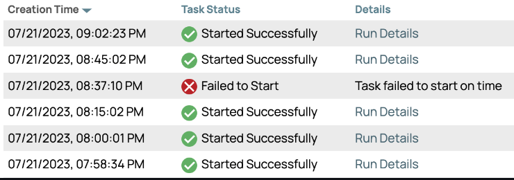
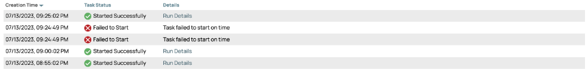
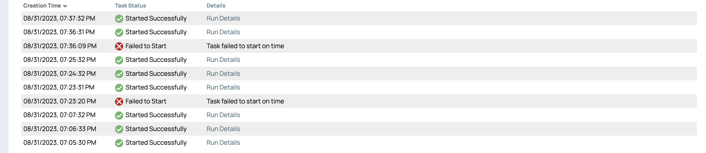
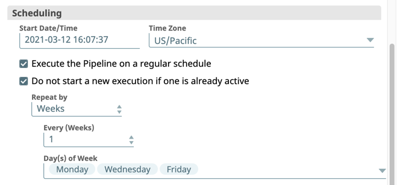
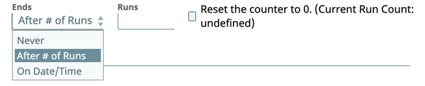
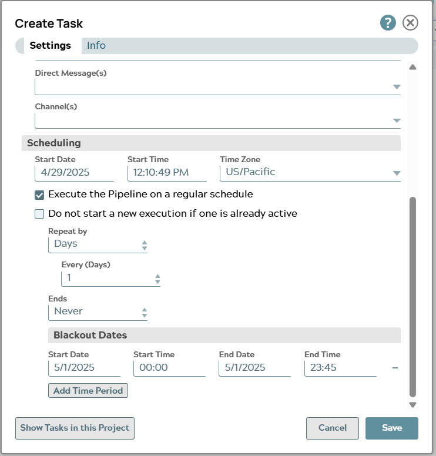
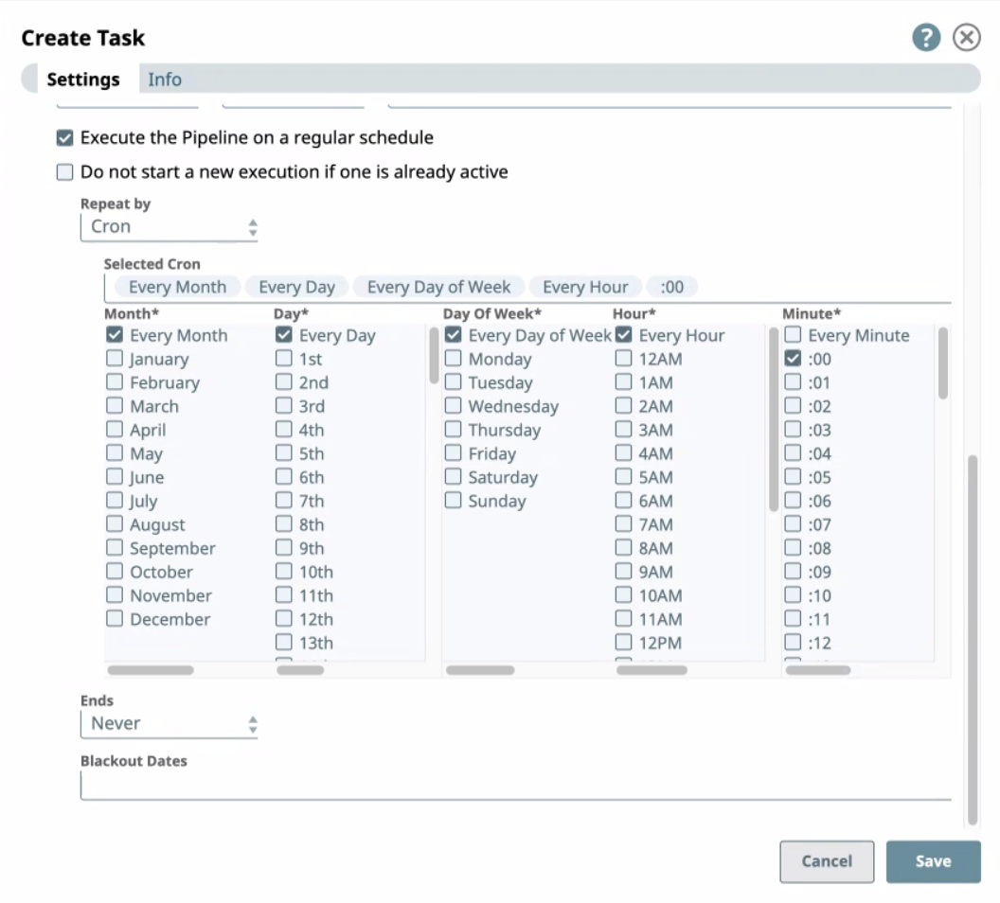

Set a repeatable schedule
Schedeuled Tasks enable you to schedule pipeline runs on a repeatable schedule. You can prevent a pipeline from running again if a previous execution of that pipeline is already running.
The Do not start a new execution if one is already active option has a three-month limit. After the three-month period, a second instance of that pipeline can execute.
A three-month limit is placed on the Do not start a new execution if one is already active option. A second instance of that pipeline is able to execute after the three-month period.
 Important:
Important:
Duplicate Task Executions: If a Task fails to start with the same reason for multiple times in a row, then subsequent skips do not display on the Task details page.
Misfires in Scheduled Tasks
A Scheduled Task that does not run the associated pipeline at the scheduled instance is referred to as a misfire. For pipelines scheduled to run daily or hourly, Scheduled Tasks have a grace period of 15 minutes after the scheduled time to execute. If a Scheduled Task fails to run as scheduled, it still has a 15-minute grace period to run the pipeline from the scheduled time.
This grace period applies to the first scheduled instance of the pipeline run. For example, if a Scheduled Task is set to run at 9 AM local time, but you disable the task at 8 AM and re-enable it at 9:10 AM, the Scheduled Task runs because it considers the grace period of 15 minutes from when it was scheduled to run.
After September 2023, the misfire threshold has more granularity for scheduled intervals of less than 15 minutes. When the misfire threshold has been exceeded, the missed tasks are marked as failed.
- Intervals of 15 Minutes or More: The grace period remains 15 minutes.
- Intervals of Less Than 15 Minutes: The grace period is reduced to 5 minutes.
For instance, if a task is scheduled to run every 15 minutes, the grace period is 5 minutes. If a task scheduled to run at 8:30 AM misses the 5-minute grace period, it will not run within the scheduled interval and the interval is skipped. Instead, the task will run at the next scheduled interval, which is 15 minutes after the last planned schedule.

If the task is scheduled to run every 5 minutes, the grace period is one and a half minutes. The image below shows that a task that runs every 5 minutes has two failures before the task is run within the 1.5-minute grace period.

If the task is scheduled to run every 1 minute, the grace period is thirty seconds. The image below shows that a task that runs every minute has two failures before the task is run within the 1.5-minute grace period.

 Note: In some cases with tasks scheduled in short interval (less than 5 minutes), the UI only shows one misfire when multiple misfires actually occurred. If you view the Snaplex JCC node logs, the misfires are recorded correctly.
Note: In some cases with tasks scheduled in short interval (less than 5 minutes), the UI only shows one misfire when multiple misfires actually occurred. If you view the Snaplex JCC node logs, the misfires are recorded correctly. Time zones and blackout dates for Scheduled Tasks
Scheduled Task times and blackout dates are based on the value set in the Time Zone field. The time zone selector includes 595 options, accommodating daylight savings changes. When the local time moves ahead by one hour due to daylight savings, Scheduled Tasks set to run during this time change window will automatically start one hour later to prevent them from being skipped. The following day, these tasks resume their normal schedule.
When Pacific Daylight Time (PDT) begins and the time changes from 2:00 AM to 3:00 AM, any task scheduled to start between 2:00 AM and 3:00 AM will start one hour later.
When scheduling tasks between midnight and 3:00 AM, consider the impact of daylight savings to avoid issues where tasks might be skipped or executed more than once.
- Daylight Savings Start: If a task is scheduled to execute at 2:37 AM on the day daylight savings starts, it will be skipped because the clock jumps from 2:00 AM to 3:00 AM.
- Daylight Savings End: If a task is set to execute every 15 minutes, there will be a gap when daylight savings ends. At 2:00 AM standard time, the clock reverts to 1:00 AM, and tasks scheduled between 1:00 AM and 2:00 AM will have already run, causing an hour without any executions.
By considering these daylight savings impacts, you can ensure that Scheduled Tasks execute as intended and avoid potential execution gaps or overlaps.
Run frequency
You can define the task run frequency. Use the Repeat By setting to select when to execute the Pipeline.
- Minutes: Select how often the pipeline should be executed in minutes (1–59) from the Every (Minutes) drop-down list. For example, you can run a Scheduled Task every 13 minutes.
- Hours: Select how often the pipeline should be executed in hours (0–24) from the Every (Hours) drop-down list. For example, you can run a Scheduled Task every 9 hours.
- Days: Select how often the pipeline should be executed in days (1–90) from the Every (Days) drop-down list. For example, you can run a Scheduled Task every 45 days.
- Weeks: Select how often the pipeline should be executed in weeks (1–52) from the Every (Weeks) drop-down list.
- Days of the Week: You can also specify which days of the week your Scheduled Task executes.
- Months: Select how often the pipeline should be executed in months (1–6) from the Every (Months) drop-down list.
- Days of the Month: You can also specify the days of the month on which your Scheduled Task executes. This includes the following options:
- Dates of the month. For example, you can run a Scheduled Task on the 12th and 24th of every month.
- Days of the month (1st, 2nd, 3rd, 4th, 5th, Last). For example, you can schedule a task to run every third Wednesday of the month.
- Days of the Month: You can also specify the days of the month on which your Scheduled Task executes. This includes the following options:
- Years: Select how often the pipeline should be executed in years (1-4) from the Every (Years) dropdown list.
- Cron: Select how often the pipeline should be executed in a Cron schedule.
Example
Example

End of schedule
You can specify the lifespan of your Scheduled Task.

Select one of the following options for ending your Schedule Task:
- Never. Select this option to run the Scheduled Task for an indeterminate time. Scheduled Task runs never stop as long as the Snaplex where the Pipeline runs remains online.
- After # of Runs. Select this option to specify the number of Scheduled
Task executions, and enter the number of Scheduled Task executions before the
schedule ends in the Runs field.
- Minimum:
1 - Maximum:
10000000If you enter an invalid number (for example,
-3or9999999999.99), the dialog displays an error. -
Note: When the limit is reached, click the Reset the counter to 0
checkbox to re-activate scheduled pipeline runs.
- Minimum:
- On Date/Time. Select this option to choose from the picker the date and time that the Scheduled Task should end.
Blackout Dates
For repeat, Scheduled Tasks, you can set Blackout dates for times when you do not want the task to run. Click the add icon ( ) to add one or more blackout dates. Blackout dates are based on the Time zone that you set for the task.
For repeat, Scheduled Tasks, you can set Blackout dates for times when you do not want the task to run. Click to add one or more blackout dates. Blackout dates are based on the Time zone that you set for the task. You can set Blackout Dates for repeated Scheduled Tasks when you do not want the task to run. This feature is available with the May 2025 Snaplex version and Orgs with Snaplex based scheduling. Contact your CSM for details.
-
Click Add Time Period to add the blackout date and time. Blackout dates are based on the Time zone you set for the task.
- Specify the blackout Start Date, Start Time, End Date,
and End Time when creating or updating a task for the blackout
interval, and click Save.

Cron schedule
You can schedule Task executions to repeat on a regular time-based schedule by selecting Cron. A Cron schedule provides more granularity. The following example illustrates the various scheduling options.

Configuration options
- Selecting Every in a column overrides the specific periods selected.
- If you select values for both Day and Day of Week, then the target day must meet both criteria. For example, 1st and Monday means on the month where the 1st day of that month is a Monday.
- If you need different pipeline run schedules based on the day of the week, create multiple Scheduled tasks (Regular or Cron).
- If you need to run the pipeline every 30 minutes, click Every for Month, Every for Day, Every for Day of Week, Every for Hour. Press CTRL/COMMAND (depending on your Operating System) and click :00 and :30.Note: CRON Schedule Increments: The Cron scheduler requires to set a point of reference when selecting increments of minutes, so that :00 is always a required starting point to make selections of less than one hour.
-
If you select Minute, then the job runs at the target minute on every hour. Example: selecting :02 minutes sets the schedule at every hour after 2 minutes. The job does not run every 2 minutes within that hour.
- To make multiple selections with a column, press CTRL/COMMAND, then click on the target entries in the column.
- To run the Task in increments of 6 minutes every hour, then select Any for Hour, then specify each period of 6 minutes (:00, :06, :12, :18, [...] :54) within that hour.
To schedule a cron task for the Nth day of the week (for example 3rd Tuesday)
- In the Create Task window, click Settings tab.
- In the Scheduling area, select the Start Date, Start Time and Time Zone.
- In the Repeat by dropdown list, select Cron.
- In the Month column, select a preferred month.
- In the Day column do the following:
- Select the Nth day of the week. For example, select Third Tuesday.
- Unselect Every Day.
- In Day Of Week column do the following:
-
Select Every Day of Week.
-
Unselect any other selection.
-
- Select other suitable options.
- Click Save.
| Example | Month | Day | Day of Week | Hour | Minute |
|---|---|---|---|---|---|
| Every day at 12:01 AM | Every | Every | Every | 12AM | :01 |
| Every weekday at 9 PM | Every | Every | Monday, Tuesday, Wednesday, Thursday, Friday | 9PM | :00 |
| Every 5 minutes but only in the morning of Friday & Saturday | Every | Every | Friday & Saturday | 12AM, 1AM, [...], 10AM, 11AM | :00, :05, :10, [...], :50, :55 |